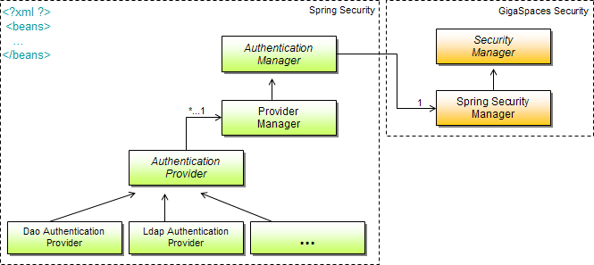

You may have noticed that Spring's Security AuthenticationProvider and AuthenticationManager, aren't much different from the GigaSpaces com.gigaspaces.security.SecurityManager. In Fact, they share a similar authentication method that handles authentication.
The org.openspaces.security.spring.SpringSecurityManager is a the GigaSpaces Spring Security bridge (between Spring Security and GigaSpaces Security Manager). It relies on the Spring Security XML configuration file for its context definitions. The Spring Security configuration resides in a standalone XML file.

The Spring Security XML configuration file contains the AuthenticationManager, ProviderManager and AuthenticationProvider references. The authentication manager is discovered by the GigaSpaces Spring Security bridge (i.e. it iterates through all the types of authentication manager and plugs it in automatically).
<sec:authentication-manager>
<sec:authentication-provider ref="ldapAuthenticationProvider"/>
</sec:authentication-manager>The Spring security configurations are loaded using Spring's FileSystemXmlApplicationContext taking the context definition files from the file system or from URLs. The location of the configuration file is set using the spring-security-config-location property; if not set, a default security-config.xml is considered (if present).
As with all GigaSpaces security configurations, they must be placed in a properties file. In order to configure the security manager to use the Spring Security bridge, we set the security-manager.class property along with the expected spring-security-config-location property.
com.gs.security.security-manager.class = org.gigaspaces.security.spring.SpringSecurityManager
spring-security-config-location = ../config/security/security-config.xml
This is all the configuration required to enable the use of the Spring-based security bridge. The rest is part of the Spring Security configuration XML file.
For convenience, the template properties config/security/spring-security.properties can be renamed to security.properties or referenced using a system property (see Security Configurations).
Any configurations that are applied can be seen by setting the logging level to CONFIG (see xap_logging.properties):
com.gigaspaces.security.level = CONFIG
Before launching up a whole full-blown application, you may want to test that the bridge is actually working to your satisfaction. For example, that the users, roles, and authorities are extracted correctly, etc. For this, you don't even need a GigaSpaces instance.
Here is a sample code, which sets up a GigaSpaces SpringSecurityManager instance by passing it the spring-security-config-location as an explicit property. The security manager calls the authenticate method with "username"/"password" returning (if successful) an Authentication object. This result contains the user details and the populated authorities of this user (all authorities including those extracted from the groups (roles) the user is part of).
import java.util.Arrays;
import java.util.Properties;
import com.gigaspaces.security.directory.User;
import com.gigaspaces.security.directory.UserDetails;
import org.openspaces.security.spring.SpringSecurityManager;
public class Main {
public static void main(String[] args) {
Properties props = new Properties();
props.setProperty("spring-security-config-location", "my-security-config.xml");
SpringSecurityManager securityManager = new SpringSecurityManager();
securityManager.init(props);
com.gigaspaces.security.Authentication authenticate = securityManager
.authenticate(new User("username", "password"));
UserDetails userDetails = authenticate.getUserDetails();
System.out.println("user: " + userDetails.getUsername() + " password: "
+ userDetails.getPassword() + " authorities: "
+ Arrays.toString(userDetails.getAuthorities()));
}
}
When running a standalone test, you will need to include the following jars in your classpath:
GigaSpaces provides a set of Security Authorities which can be stored as a String in any external directory. Much like the Spring's Security GrantedAuthority s which translate to and from a String.
Lets take for example a Box-Office employee which has READ privileges, for class "eg.cinema.Movie".
We convert the class expression using the WildcardExpressionToFilterConverter methods. This converter takes in an expression, for example a regular expression expressing the permitted classes the employee can read.
System.out.println(new SpaceAuthority(SpacePrivilege.READ,
WildcardExpressionToFilterConverter.convert(
"eg.cinema.Movie", true)));
The output result is:
"SpacePrivilege READ ClassFilter eg.cinema.Movie"
This String represents the authority which, for example, can be stored in a database.
Spring's Security authenticate method returns an Authentication object holding all GrantedAuthority s. These authorities are String based, and should equal to the GigaSpaces authority String as above. Each authority is converted back (by SpringSecurityManager) into its object instance using the GigaSpaces AuthorityFactory. Of course, all this has already been done for you - all you need is to store the appropriate authority Strings.
Not always would you need an expressions as a filter. If we would have wanted to grant full READ privileges, than the authority would be represented as:
System.out.println(new SpaceAuthority(SpacePrivilege.READ));
The output result is:
"SpacePrivilege READ"
Similar, are the GridAuthority, MonitorAuthority and SystemAuthority. For example, the Gird authority Provision PU allows to deploy, un-deploy processing units, and is represented as:
System.out.println(new GridAuthority(GridPrivilege.PROVISION_PU));
The output result is:
"GridPrivilege PROVISION_PU"